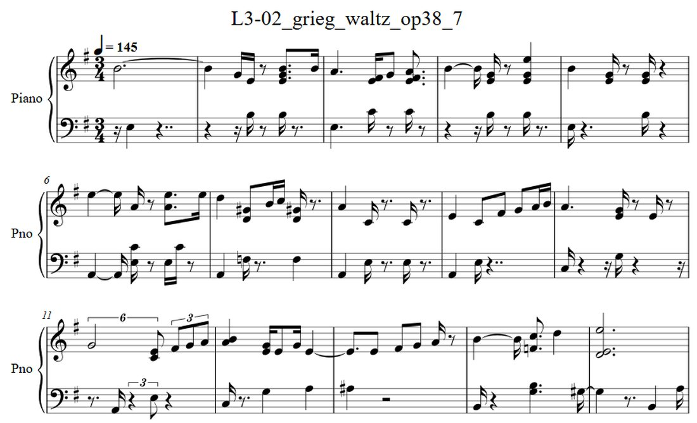
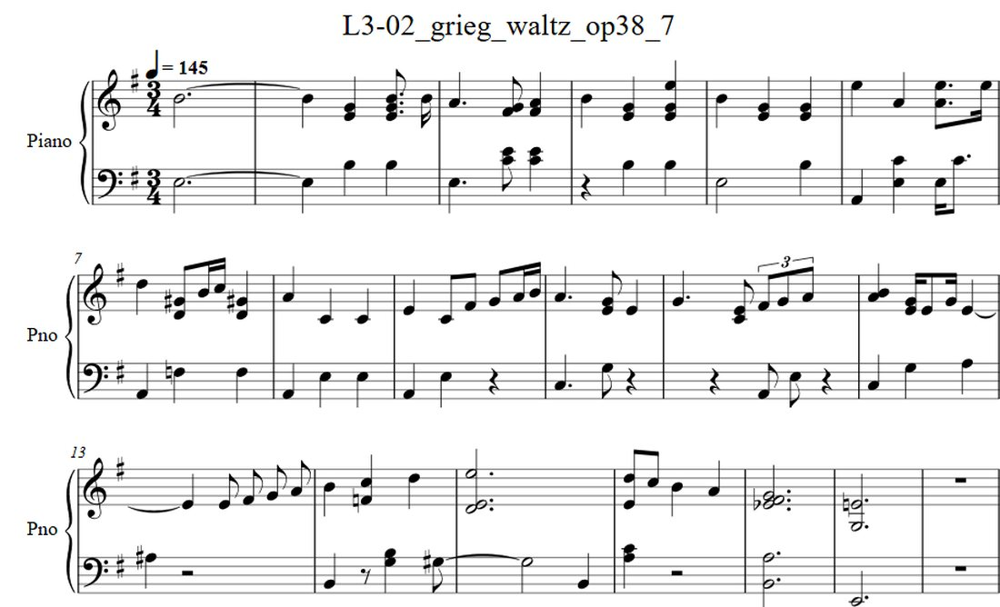
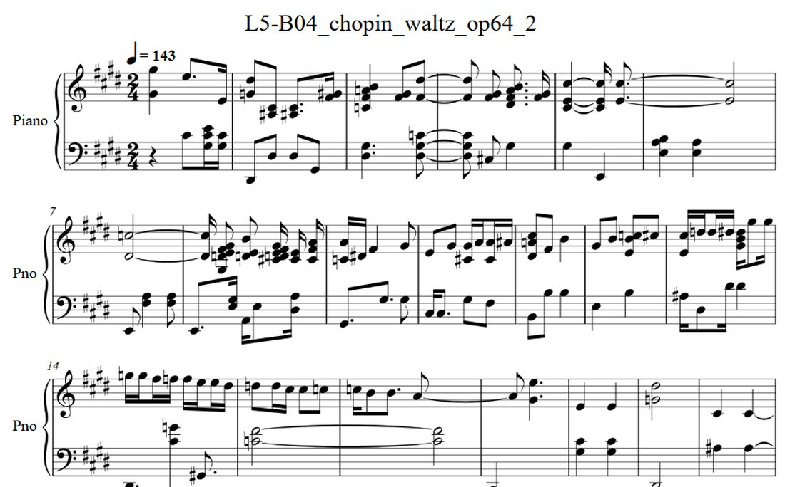
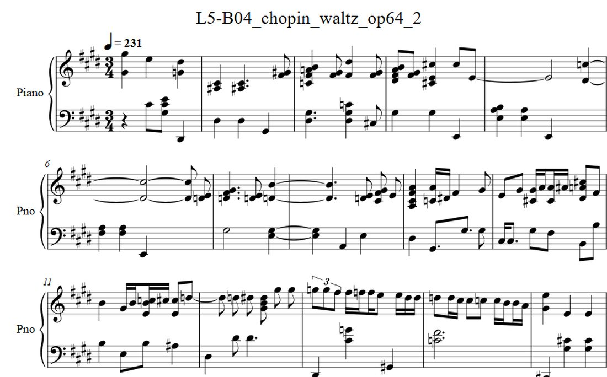

首页Home / 项目Projects / 全自动扒谱Auto Transcription
全自动扒谱Auto Transcription
把钢琴曲或单旋律录音自动转成能直接导入打谱软件的五线谱（MusicXML）、量化 MIDI 和简谱。在 16 首测试曲上调号与拍号全部识别正确。Turns piano or single-melody recordings into clean sheet music (MusicXML), quantised MIDI and numbered notation. Key and time signatures are correct on all 16 test pieces.
- 类型Type
- 音频转谱流水线Audio-to-score pipeline
- 语言Language
- Python
- 输出Output
- MusicXML · MIDI · 简谱 · SVGMusicXML · MIDI · Jianpu · SVG
- 版本Version
- v4 (2026-11-23)
流程Pipeline
- 音频 → MIDI：自动判断类型，钢琴用 Transkun v2，长笛、小提琴、人声等单旋律用 pYIN 音高跟踪。Audio → MIDI: detects the source automatically — Transkun v2 for piano, pYIN pitch tracking for single melodies such as flute, violin or voice.
- MIDI → 乐谱（核心）：节拍跟踪 → 量化（16 分音符 / 三连音）→ 拍号与强拍 → 调号与升降号拼写 → 左右手分配。MIDI → score (the core): beat tracking → quantisation (16ths / triplets) → time signature and downbeats → key signature and accidental spelling → left/right-hand split.
- 输出：钢琴大谱表 MusicXML（可导入 MuseScore / Sibelius / Finale / Dorico）、量化 MIDI、简谱文本和谱面预览。Output: grand-staff MusicXML (opens in MuseScore / Sibelius / Finale / Dorico), quantised MIDI, numbered notation and a rendered preview.
效果Results
- 测试集分四级：从单旋律儿歌到巴赫、肖邦、舒伯特、莫扎特的钢琴曲，共 16 首。A four-level test set of 16 pieces, from simple melodies to piano works by Bach, Chopin, Schubert and Mozart.
- v4：核心 16 首调号全对；15 首训练集外录音中，严格拍号 14 首正确，音符 F1 0.993 以上。v4: key signatures 16/16 on the core set; on 15 held-out recordings, strict time signature 14/15 and note F1 above 0.993.
- 全部在 CPU 上运行，每次运行自动生成测评报告，方便对比版本。Runs entirely on CPU and writes an evaluation report on every run, so versions can be compared.
训练过程How it was trained
这个项目没有从零训练模型，而是在现成的音频模型之上，一轮轮改进"音符 → 乐谱"的算法。每一轮都按同一个流程走：先写清任务，再在独立分支上实现、对所有测试曲重跑测评，最后由另一方独立复现分数并检查有没有退步，通过了才进入下一轮。Rather than training a model from scratch, the project improves the notes-to-score algorithm on top of existing audio models, one round at a time. Every round follows the same loop: write the task, build it on its own branch, re-run the full evaluation, then have a reviewer reproduce the scores and check for regressions before moving on.
- 01发布任务Write the task写清目标和验收标准Goal + acceptance bar
- 02独立分支实现Build on a branch只改流水线代码Pipeline code only
- 03全量测评Full evaluation所有测试曲重跑一遍Re-run every piece
- 04独立验收Independent review复现分数、查退步Reproduce, catch regressions
版本时间线Version timeline
-
v111-22
第一版流水线First pipeline
音频 → MIDI → 五线谱 + 简谱跑通；钢琴用 Transkun，单旋律用 pYIN。Audio → MIDI → staff + numbered notation, end to end; Transkun for piano, pYIN for melodies.
11 首测试曲11 pieces调号 11/11keys 11/11L3 拍号 3/5L3 meter 3/5 -
v211-22验收 · Review · 合格Passed
节拍跟踪Beat tracking
接入 beat_this 节拍与强拍模型，强拍锁定细化、支持复拍子；新增 L4 真人演奏测试集。beat_this beats and downbeats, downbeat-locked refinement, compound meters; new L4 real-performance set.
L4 小节线 F 0.997L4 bar F 0.997L4 拍号 5/5L4 meter 5/5L3 拍号 4/5L3 meter 4/5 -
v311-22验收 · Review · 基本合格Mostly passed
谱面可读性Readability
踏板延音、随速度自适应量化、抑制碎连音、简化休止符、真正的弱起小节。Pedal-aware durations, tempo-adaptive quantisation, tuplet suppression, simpler rests, real pickups.
休止/小节 1.24 → 0.11rests/bar 1.24 → 0.11连音 12.3% → 0.4%tuplets 12.3% → 0.4%调号退步 13/16keys regressed 13/16 -
v3.111-22验收 · Review · 合格Passed
调号修正Key fix
调性分析改用原始音符，开头乐句判断大小调，超过 6 个升降号自动等音简化。Key detection on raw notes, opening-phrase major/minor check, enharmonic simplification past 6 accidentals.
调号 13 → 16/16keys 13 → 16/16其他指标零退步zero regressions -
v4-test11-23验收 · Review · 合格Passed
训练集外测试Held-out test
新增 15 首没参与训练的录音（L5）：自动钢琴、历史录音和 Rose 的钢琴翻弹，专门检验泛化。15 recordings outside the training data (L5): Disklavier, historic recordings and Rose’s own covers.
音符 F1 0.993–1.000note F1 0.993–1.000严格拍号仅 7/15strict meter only 7/15调号 13/15keys 13/15 -
v411-23验收 · Review · 合格Passed
拍号与复拍子Meter & compound time
复拍子判别、强拍纯度、机械速度加力度条件、快三拍 3/8；测评改成严格拍号。Compound-meter detection, downbeat purity, velocity-aware mechanical tempo, fast 3/8; strict meter scoring.
严格拍号 7 → 14/15strict meter 7 → 14/1512/8 连音 52% → 012/8 tuplets 52% → 0L1–L4 零退步L1–L4 unchanged -
next进行中now
新曲验证New-song validation
v4 的阈值是在这 15 首上调出来的，下一步用没见过的新曲子检验有没有过拟合。v4’s thresholds were tuned on these 15 pieces; next, fresh songs check for overfitting.
TASK-007TASK-007
改进前后对比Before and after 拖动中间的把手drag the handle


v2v3

v4-testv4分数可能偏乐观：Transkun 和 beat_this 的训练数据可能包含部分测试曲（MAESTRO / ASAP），所以 v4-test 起专门加入了训练集外的录音来检验。Scores may be optimistic: Transkun and beat_this may have seen some test pieces (MAESTRO / ASAP) during training, which is why held-out recordings were added from v4-test on.
用到的开源工具：Transkun、librosa、music21、mir_eval、verovio。部分测试音频来自 MAESTRO 数据集（CC BY-NC-SA）。项目还在继续。Built on Transkun, librosa, music21, mir_eval and verovio. Part of the test audio comes from the MAESTRO dataset (CC BY-NC-SA). Still in progress.